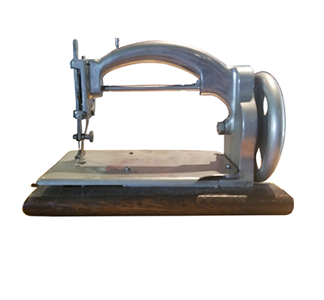
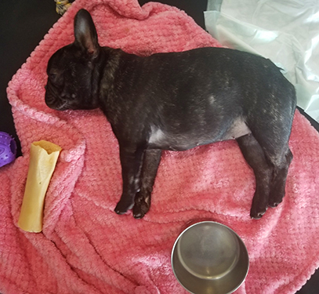
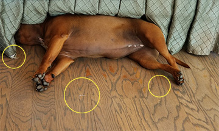

Seeking the most up-to-date advice from the Interplanetary Travelers Advisory Group, Dilstar7 explores the "seemingingly" empty airspace approximately 3 feet in front of her face in an attempt to perceive the group's potential prescence. Interplanetary travel advisors automatically appear about 3 feet in front of the retinal plane of any intelligent life form actively contemplating interplanetary travel and seeking to make contact with official interplanetary travel guides. Dilstar7 is clearly seeking something as evidenced by her keen and penetrating stare in the image above. Whether she is seeking "interplanetary" or "intergalactic" advisors is not, however, entirely clear.
(Editors Note: If travel contemplated is inter-galactic, a separate set of advisors is available at a distance of approximately 20 feet in front of the retinal plane.)
Early Years of Preparation for Interplanetary Travel
Pushups are important to the effectiveness of early training for all interplanetary travelers and Dilstar7 was no exception having endured rigorous push up workouts under the close supervision of The Notorious Pooh-Face.
Video Footage Provides Shocking Evidence of Intense Training Extremely Early in Youngster's Life
Early in Dilstar7's career at Elbertonllenne farms, coinciding with a peek meteor season and an intense flurry of electro-magnetic solar activity, a high volume of imposter interplanetary travel advisor sightings were reported between the coastal towns of Port Hueneme and Vandenberg Airforce Base which is located just south of Calpoly Technical Institute in San Luis Obispo, California. In response to these unusual circumstances, Judith Anne and The Notorious Pooh-Face felt it necessary to begin martial arts training for Dilstar7 at a very young age. In the video footage below, Dilstar7 is trained to battle off unwanted, imposter interplanetary traveler advisors by Pooh-Face and Judith Anne Sollenne.
Why Do We Say, "The Sewing Machine?"
Many fans of this blog and those persuing source data and narrative on the "Dilstar7-Phenom" wonder why the language "The Sewing Machine" so frequently appears in documents, Dilstar7 spreadsheets, archives and paranormal accounts related to her mysterious origins story.

Cause If It Looks Like a "Sewing Machine"...
The language "The Sewing Machine", which most recently appeared in dialog and oral accounts cited in the current Amazon best-selling bibliography The Unauthorized Dilstar7 History, is actually the code name of her "Ideal" interplanetary traveling companion, Sunny-Betty (aka "Dinky-Doodle").

It Probably Is a Sewing Machine
Sunny-Betty, aka "dinky-Doodle", aka "The Sewing Machine" is actually a contract emloyee who lives and works alongside Dilstar7 at Elbertollenne Farms in Noleta, California. Sunny-Betty has held several key positions at Elbertollenne Farms, including Food Service Manager, and Activity Director. In the video footage below, Sunny-Betty attempts to direct the activity of an Elbertollenne Farms guest but her efforts are thwarted by Dilstar7 who interrupts the exchange, confusing Sunny-Betty who then simply runs into the house to avoid further embarassment.
The Notorious Pooh-Face Foolhardily Attempts "Shreddation" of Planetary Travel Code
In a desperate attempt to destroy a potentially damning communication, The Notorious Pooh-Face viciously attacks a napkin containing "manipulated" trace evidence — a series of dot-like ink transfers from a source unknown but clearly "interplanetary".

Dilstar7 Secretly Leaves Clandestine Messages
It is not uncommon for interplanetary instructions to be transmitted in a covert fashion — such as napkin stains, mud spots on clothing, dirty dishes and filth on automobiles. This highly deceptive practive of camouflaging and embedding code into ordinary "stain" patterns has reached a never-before-imagined level of sophistication and complexity in the skilfull paws of Dilstar7 and her conspiring interplanetary associates.
As a Pup, Dilstar7 Started Messaging with Bits of White Gravel with Liter Mates
DO NOT BE FOOLED. Every pattern is evidence. Every splatter is a potential communication. Though the Notorious Pooh-Face attempts to intercept a powerful communication from the IPA (Interplanetary Travel Advisors)readers will learn in upcoming blogs, this attempt to halt intervention will prove unsuccessful.